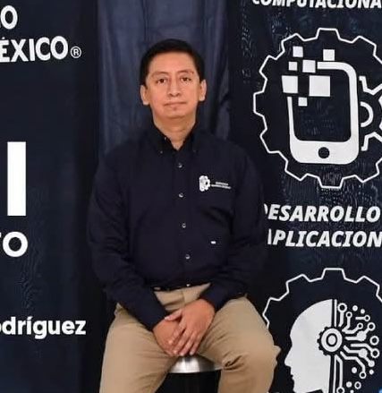

Conservación agroecológica
Documentación y caracterización del maíz nativo en comunidades de la Huasteca Potosina.
Ingeniería de datos e infraestructura de datos distribuidos para problemas reales
Desarrollo plataformas de datos y aplicaciones inteligentes para atender problemáticas socioambientales. Hoy mi trabajo se centra en el monitoreo agroclimático y la conservación de sistemas agroecológicos de la Huasteca Potosina, junto con especialistas en agronomía, ciencias ambientales y desarrollo comunitario.

01 — Perfil
Soy Doctor y Maestro en Ciencias en Ingeniería y Tecnologías Computacionales por el Cinvestav Unidad Tamaulipas e Ingeniero en Tecnologías de la Información y Comunicaciones por el TecNM. Desde agosto de 2024 soy profesor-investigador del Departamento de Sistemas y Computación del Instituto Tecnológico de Ciudad Valles, y formo parte del Sistema Nacional de Investigadoras e Investigadores (SNII).
Mi formación se consolidó en el diseño, análisis e implementación de sistemas distribuidos para almacenar, procesar y analizar datos a gran escala, primero en plataformas de salud y servicios digitales. Hoy oriento ese conocimiento a una línea de investigación en sistemas computacionales aplicados a problemáticas socioambientales, con énfasis en el monitoreo agroclimático y la conservación de sistemas agroecológicos en la Huasteca Potosina.
Busco que las soluciones de ingeniería atiendan problemas reales, apoyen la toma de decisiones basada en evidencia y fortalezcan las capacidades tecnológicas del país, empezando por la región donde vivo.
02 — Línea de investigación
“Ingeniería de datos y gestión de información, infraestructura de datos distribuidos y aplicaciones inteligentes orientadas a problemas reales.”
Área Interdisciplinaria · Ingenierías y desarrollo tecnológico · Ingeniería de sistemas
Captura, integración, calidad y análisis de datos geoespaciales, climáticos y productivos provenientes de sensores IoT, registros de campo y fuentes externas.
Almacenamiento distribuido, replicación, tolerancia a fallas y arquitecturas Edge–Fog–Cloud que llevan los datos del campo a la nube de forma confiable.
Plataformas web, visualización geoespacial, imágenes multiespectrales e IA aplicada para la toma de decisiones basada en evidencia.
Documentación y caracterización del maíz nativo en comunidades de la Huasteca Potosina.
Estaciones IoT, redes LoRa y variables climáticas para enfrentar sequías y altas temperaturas.
Mapas espectrales e índices de producción para la caña de azúcar de la región.
Antecedente: infraestructura distribuida y repositorios FAIR para plataformas de e-salud.
Mi línea reúne a la ingeniería de sistemas con otras disciplinas. En AgroMaíz trabajo con especialistas en:
03 — Proyectos y desarrollos tecnológicos
SECIHTI · Ejes Estratégicos 2025 · PEE-2025-G-369 · Responsable técnico
Plataforma para el monitoreo, la gestión y el análisis de información agroecológica del maíz nativo. Integra datos geoespaciales, climáticos y productivos de sensores IoT, registros de campo e imágenes multiespectrales con drones, sobre una arquitectura distribuida en la nube. Incluye mapas, consulta de variables agroclimáticas, gestión de parcelas y análisis de datos. Coordino el desarrollo tecnológico, el trabajo de campo y un equipo interdisciplinario de computación, agronomía, fitopatología, SIG y ciencias ambientales.
Etapa 1 aprobada por SECIHTI · Etapa 2 en curso (oct 2026 – sep 2027)
Propuesta 2026 · Línea actual
Extiende la infraestructura de AgroMaíz al cultivo de caña de azúcar de la región, retomando el uso de mapas espectrales para estimar índices de producción.
Tesis de maestría codirigida · TecNM · 2025
Aplicación de imágenes espectrales y análisis de datos para estimar la producción de cultivos de caña de azúcar.
FORDECYT 41756 · 2020 – 2023 · TRL 5
Almacenamiento distribuido, replicación y recuperación ante fallas para una plataforma nacional de grandes volúmenes de datos de salud.
Software · 2020 – 2023 · TRL 4
Gestión, publicación e interoperabilidad de datos, metadatos y servicios digitales, con código fuente, manual de despliegue y videos de demostración.
Investigación doctoral · Cinvestav
Esquemas de distribución sensibles al contexto que contienen la E/S de microservicios en almacenamiento jerárquico y reducen peticiones a la nube.
04 — Publicaciones
Lista actualizada en Google Scholar y ORCID.
On the Efficient Delivery and Storage of IoT Data in Edge–Fog–Cloud Environments
Sensors, 22(18), 7016 · doi:10.3390/s22187016
IEEE Transactions on Cloud Computing · doi:10.1109/TCC.2020.2968444
Cinvestav Unidad Tamaulipas · Asesor: J. L. González Compeán
Muyal ALWA: repositorio de servicios, datos, contenidos y resultados producidos por sistemas de e-salud · Reporte técnico de la plataforma Muyal-Ilal
Cinvestav
Arquitectura para la construcción de sistemas de compartición de archivos en la nube basada en micro-aplicaciones
Cinvestav Unidad Tamaulipas · Capítulo 3 · ISBN 978-607-9023-62-1
05 — Docencia y formación
Maestría en Inteligencia Artificial
Ing. en Inteligencia Artificial
Ing. en Desarrollo de Aplicaciones
Ing. en Sistemas Computacionales
Otras ingenierías
Cinvestav (asistente, 4.5 años)
06 — Divulgación y comunidad
2026
Evaluación técnica de prototipos de software y emprendimiento de todo San Luis Potosí.
2025
CBTis No. 46, Ciudad Valles.
2025
Universidad Intercultural de San Luis Potosí, Unidad Académica Ciudad Valles.
2025
Entrenamiento en algoritmos, estructuras de datos y optimización.
2025
Robótica para estudiantes de primaria y secundaria con necesidades educativas especiales. Ver publicación
2025
Diseño, armado y programación de prototipos con jóvenes de bachillerato. Ver publicación
2025
Programación y automatización con contenidos adaptados a un contexto intercultural.
2024
Universidad Intercultural de San Luis Potosí, campus Valles.
2024
Taller intensivo de algoritmos y lógica de programación.
2024
“SIC: Sistema Integral de Calificaciones”, “SRME: Sistema de Registro Médico Estudiantil” y “Memorama contable, jugando y aprendiendo”.
2024
CBTis No. 46.
2024
Cursos de 30 y 10 horas.
2022
Instituto Tecnológico de Ciudad Valles.
Para mis estudiantes
07 — Contacto
Me interesa colaborar en proyectos interdisciplinarios de ingeniería de datos, infraestructura distribuida y aplicaciones para problemas socioambientales, y dirigir tesis y residencias profesionales.
Departamento de Sistemas y Computación
Instituto Tecnológico de Ciudad Valles
Ciudad Valles, San Luis Potosí, México